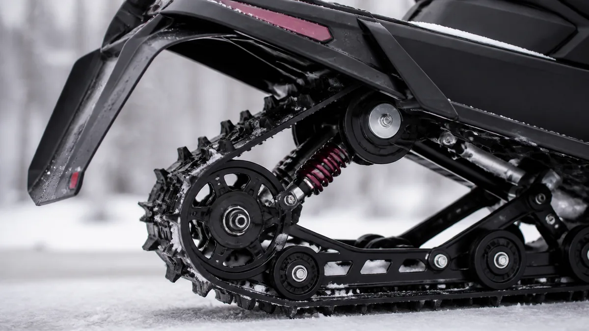

СНЕГОХОДЫ · 13
Гусеница и подвеска снегохода
Износ гусеницы и элементов подвески легче заметить во время регулярного осмотра, чем после потери управляемости или тяги.

Что осматривать
- Проверьте целостность зацепов, наличие порезов, трещин и посторонних предметов.
- Оцените натяжение и соосность гусеницы по инструкции производителя.
- Осмотрите ролики, направляющие, амортизаторы и крепёж.
Сигналы для диагностики
Неравномерный износ, увод, стук или ухудшение хода требуют осмотра. Не продолжайте эксплуатацию с повреждённой гусеницей.
После тяжёлой поездки
После движения по льду, глубокому снегу или удара о препятствие очистите ходовую и проверьте её до следующего выезда. Натяжение и соосность гусеницы сверяйте только с инструкцией вашей модели.
Остановите эксплуатацию при
- Порезе или трещине гусеницы.
- Уводе, стуке и сильной вибрации.
- Следах касания гусеницы и потере тяги.
Полезно после проверки
Осмотр ходовой удобно делать после мойки и полного оттаивания: так видны порезы, следы трения и трещины. Не оценивайте натяжение, пока в туннеле и гусенице остаётся лёд.